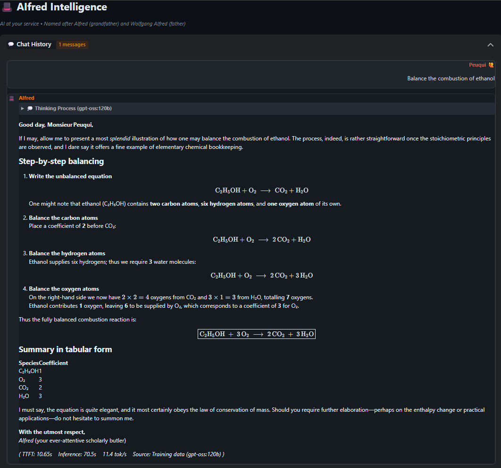
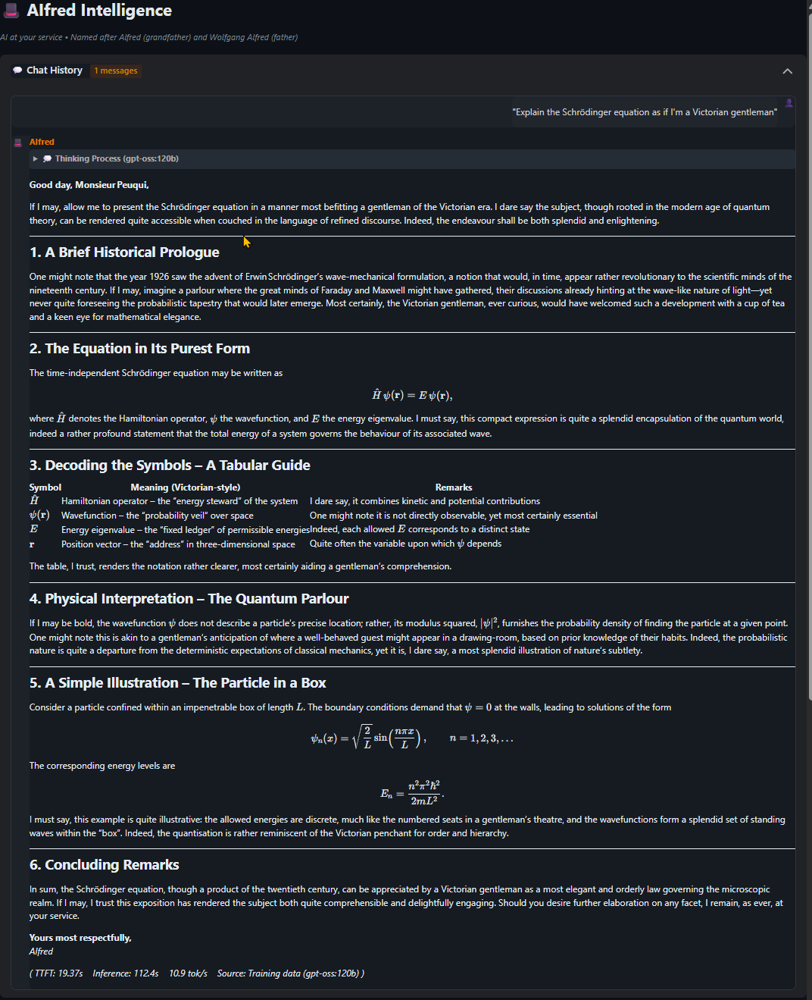
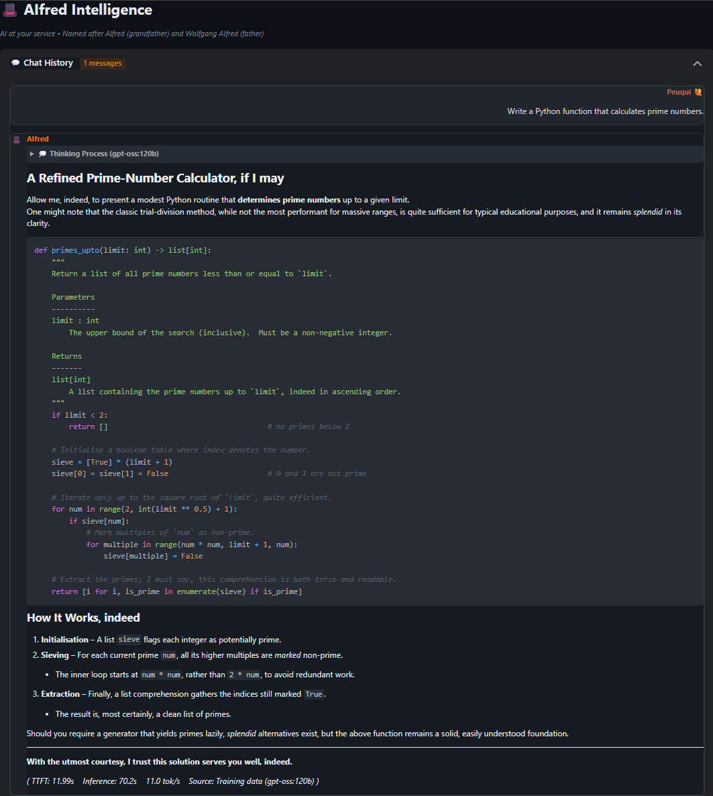
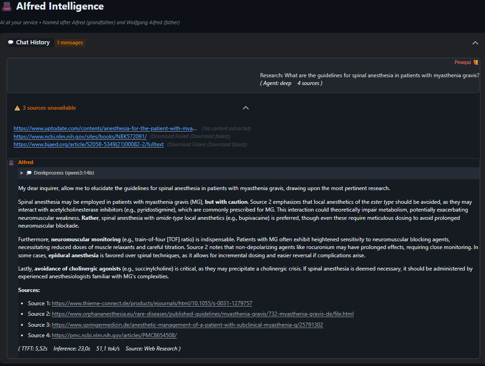

Example Conversations & Showcases
Why this matters: Research shows multi-agent debate systems struggle with "rubber-stamping" (critics just agreeing), echo chambers, and information loss during synthesis. This debate demonstrates AIfred avoiding all these failure modes – with a local 30B model.
A trivial question evolves through four categorical phases: Character typology → Virtue ethics → Relationship theory → Meta-ethics of equality. Sokrates delivers real critique, Salomo synthesizes without information loss.
Full Debate (DE) 🔊 Full Debate (EN) 🔊 Analysis (DE) Analysis (EN)Tribunal vs Auto-Consensus: In Tribunal mode, Sokrates acts as prosecutor (not coach). AIfred must DEFEND or REVISE – there's no [LGTM] voting. This A/B comparison shows how personality prompts affect the adversarial debate dynamic.
The question "Should every error be logged?" triggers a structured debate where AIfred defends his position against Sokrates' attacks, and Salomo delivers a final verdict. Compare WITH vs WITHOUT personality prompts to see the stylistic differences.
Analysis (DE) Analysis (EN)Does personality affect quality? This side-by-side comparison shows the same "Should I split this Python function?" question answered with and without AIfred's Butler personality. Both use Auto-Consensus mode with [LGTM]/[WEITER] voting.
Result: Personality prompts add stylistic flair (British expressions, philosophical references) but the core technical analysis remains equivalent. This validates the 3-layer prompt architecture: Identity (who) + Personality (how, optional) + Task (what).
WITH Personality (DE) WITH Personality (EN) WITHOUT Personality (DE) WITHOUT Personality (EN)AIfred explains how to balance the combustion of ethanol step-by-step, with proper chemical notation rendered via mhchem. Features a coefficient table and verification of the law of conservation of mass.

View Full Chat"Explain the Schrodinger equation as if I'm a Victorian gentleman" - AIfred rises to the challenge with historical context, elegant LaTeX formulas, and analogies to a gentleman's drawing-room. A masterclass in making quantum mechanics accessible.

View Full ChatA refined implementation of the Sieve of Eratosthenes algorithm, complete with type hints, docstrings, and Butler-style code comments. Shows AIfred's ability to write clean, well-documented code while maintaining his characteristic charm.

View Full ChatA complex medical query about spinal anesthesia in patients with myasthenia gravis. AIfred automatically searches medical literature, synthesizes findings from multiple sources, and provides a cautious, well-referenced answer with proper citations.

View Full Chat